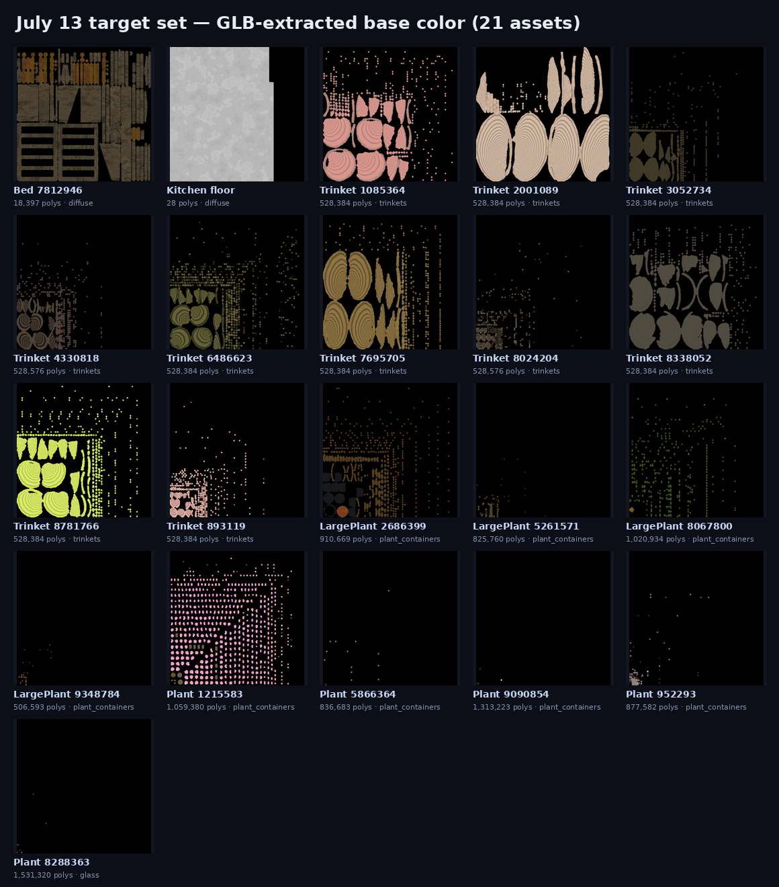
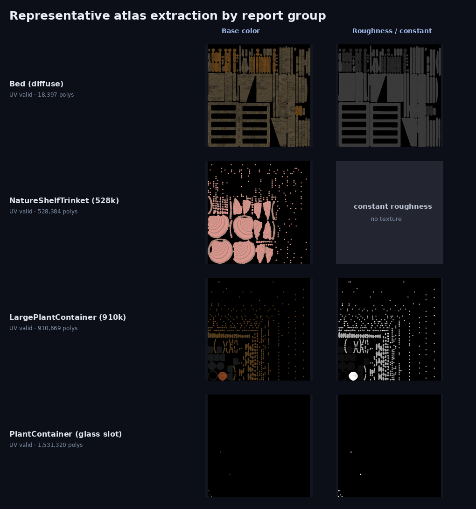
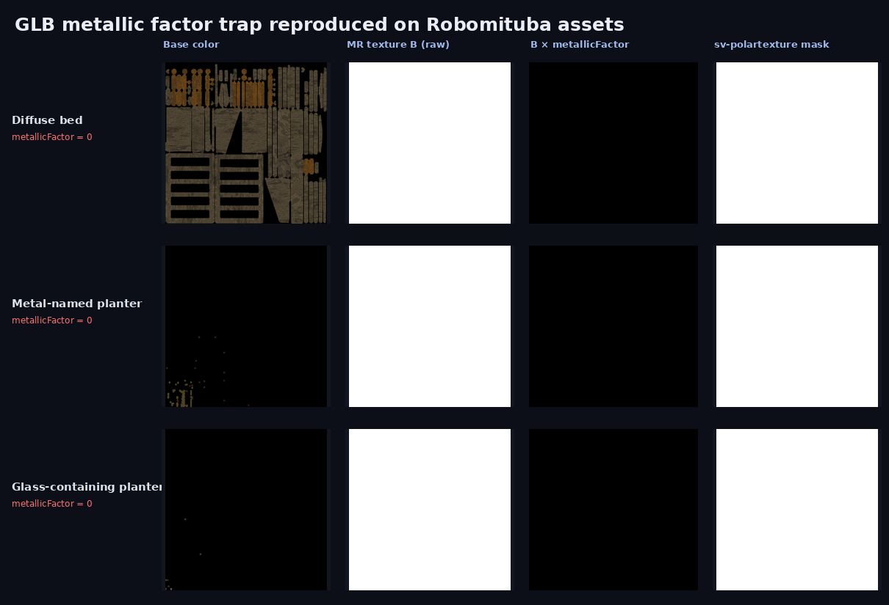
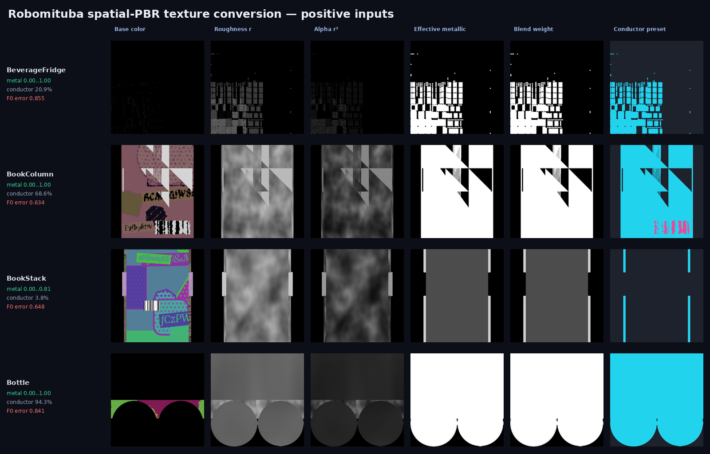
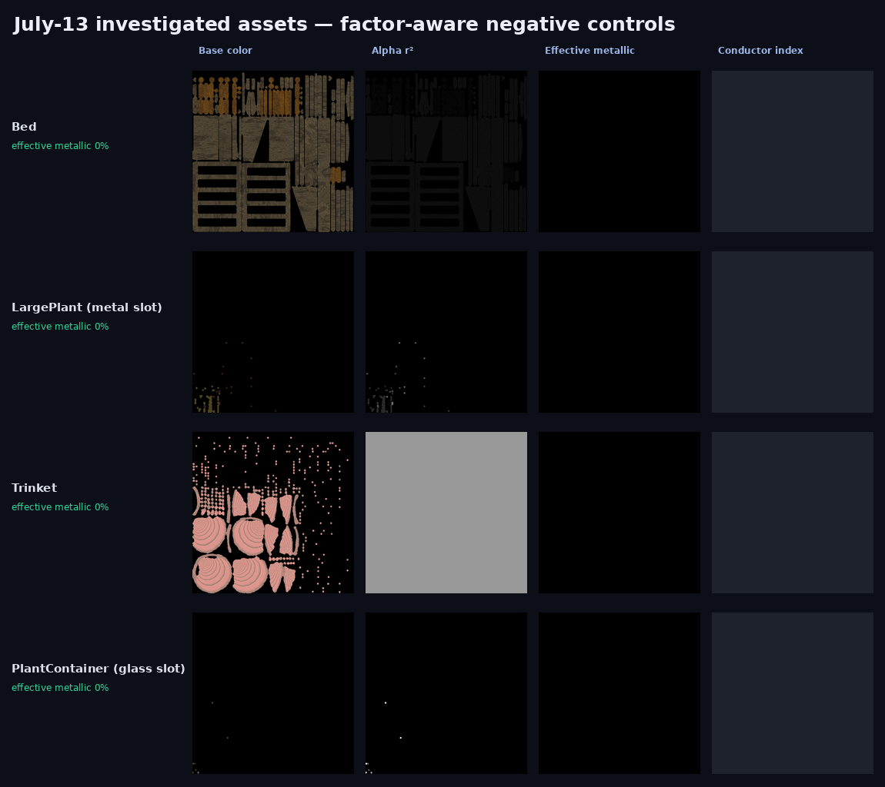

Infinigen spatial PBR → spectral·polarized analytic BSDF 적용성 검증
요약
07-08에 degenerate UV를 복구했던 네 그룹을 실제 Robomituba GLB로 다시 읽어, 첨부된 sv-polartexture의 PBR 추출·metal mask·F0→conductor n/k 생성을 실행했다. geometry/UV/PBR 추출과 Mitsuba BSDF 로드는 가능하지만, 원본 알고리즘은 glTF의 metallicFactor를 무시해 이번 대상의 diffuse·glass를 전부 conductor로 오판했다.
sv-polartexture.py 전체를 그대로 편입하면 안 된다. mesh normalization/OBJ rewrite는 제외하고, effective_metallic = texture.B × metallicFactor와 Robomituba optical_class 우선순위를 포함한 atlas adapter만 재구현해야 한다.pbr.status=ok 242/242는 PNG 존재만 확인한 과대 판정이므로 Stage 2·sync·render는 보류한다.1. 07-08 재-bake 대상 4그룹
| 보고서 그룹 | 실제 대상 | 폴리곤 | 현재 계약 |
|---|---|---|---|
| Bed · kitchen floor | Bed 1 + kitchen floor 1 | 18,425 | diffuse · albedo 정상, bed roughness texture |
| NatureShelfTrinkets ×10 | 528,384/528,576 poly인 10개 | 5,284,224 | diffuse · basecolor texture, roughness/metallic constant |
| LargePlantContainer ×4 + PlantContainer ×4 | Large 4 + 0.84–1.31M Plant 4 | 7,350,824 | diffuse/metal material part 혼합 · basecolor/roughness texture |
| PlantContainer(glass) ×1 | PlantContainerFactory_8288363… | 1,531,320 | glass + sand/speckle/plant material part 혼합 |

2. GLB/PBR 계약 점검
- 21/21: 모든 geometry에 UV가 존재하고 span이 non-zero.
- 21/21: manifest
pbr.status=ok,self_contained_glb=true. - 21/21:
trimesh를 통한 embedded baseColorTexture 재추출 성공. - Bed/plant/glass 10개는 packed metallic-roughness texture 보유, floor/trinkets 11개는 roughness·metallic이 constant라 MR texture가 없음.

3. 원본 sv-polartexture 실행 결과
첨부 스크립트의 save_textures()와 make_nk_maps()를 mesh normalize/OBJ rewrite 없이 21개 GLB에 적용했다.
| 그룹 | basecolor | n/k 생성 | 원본 알고리즘 판정 |
|---|---|---|---|
| Bed + floor | 2/2 성공 | Bed 1개 | Bed conductor 100% — 오판 |
| Trinkets ×10 | 10/10 성공 | 0 | MR texture 없음 → diffuse short-circuit, 정상 |
| Plant containers ×8 | 8/8 성공 | 8/8 | 전부 conductor 100% — 오판 |
| Glass container ×1 | 1/1 성공 | 1/1 | conductor 100% — glass 파괴 |
오판된 texel의 conductor preset은 ThF4 2,543,837 px가 압도적이었고, 뒤이어 MgO 34,251 px, Cu 29,945 px였다. 이는 렌더러 호환성 문제가 아니라 metallic 입력 해석 오류의 결과다.
4. 근본원인 — glTF metallicFactor를 무시
glTF metallic-roughness는 texture 하나로 끝나지 않는다. 최종 metallic은 다음 곱이다.
이번 GLB는 roughness texture를 pack하기 위해 B 채널을 1.0으로 채우고, material의 metallicFactor=0으로 diffuse를 표현한다. 원본 스크립트는 B만 저장하므로 1.0×0을 1.0으로 잘못 해석한다.

roughnessFactor와 baseColorFactor도 같은 원칙으로 처리해야 한다.5. factor만 고쳐도 부족 — optical_class가 우선
Infinigen은 이름이 shader_hammered_metal이어도 Principled metallic 값이 0인 사례가 있다. 따라서 factor를 올바르게 적용하면 false metal은 사라지지만, 실제 metal material part까지 plastic으로 놓칠 수 있다.
| 우선순위 | 판정 | 렌더 BSDF |
|---|---|---|
| 1 | material slot optical_class=glass | dielectric/roughdielectric; metallic atlas 무시 |
| 2 | optical_class=metal_* 또는 강한 metal name | part 전체 roughconductor + 실제 eta/k preset |
| 3 | 신뢰 가능한 effective metallic texture | blendbsdf(pplastic, roughconductor) |
| 4 | 나머지 diffuse | textured pplastic |
6. production spectral·polarized BSDF 로드 검증
GPU 접근이 가능한 환경에서 cuda_ad_spectral_polarized variant로 세 대표 branch를 직접 instantiate했다.
| 대표 | BSDF | 결과 |
|---|---|---|
| Bed diffuse | bitmap albedo + bitmap alpha pplastic | BSDF load 성공 |
| Metal-mixed planter | bitmap eta/k + bitmap alpha roughconductor | BSDF load 성공 |
| Glass PlantContainer | bitmap alpha roughdielectric | BSDF load 성공 |
따라서 적용을 막는 기술적 장애는 없다. 문제는 어떤 texel/part에 어느 BSDF와 optical constants를 배정하느냐다.
7. 정식 편입 판단
| 구성요소 | 판정 | 이유 |
|---|---|---|
| GLB→OBJ normalize/rewrite | 제외 | OpticalNav world scale/transform 파괴, 기존 GLB materializer와 중복 |
| PBR texture extraction | 재사용 | 단, glTF factor와 multi-material 처리 필수 |
| Gaussian σ=30 mask | 제외 | 해상도 의존 경계 bleed; metallic texture를 continuous weight로 사용 |
| RGB F0 nearest preset | 실험용 | material identity가 불명확한 metal texel의 보조 추정치로만 사용 |
| RGB n/k EXR | Phase 1 | polarized spectral variant에서 로드되지만 3-band 재구성이라 full SPD는 아님 |
| conductor index map | Phase 2 기반 | custom indexed conductor가 full eta(λ), k(λ)를 선택하는 입력으로 적합 |
최종 결정: standalone script의 정식 편입은 보류하고, Robomituba-native spatial_pbr_adapter로 핵심만 재구현한다.
8. Robomituba texture-only converter 구현
mitsuba_converter.spatial_pbr와 manifest CLI apps/convert_spatial_pbr_textures.py를 추가했다. geometry, UV, transform은 건드리지 않고 이미 bake된 atlas만 Mitsuba용 공간 가변 BSDF 입력으로 바꾼다.
- 새
pbr.channels와 기존baked_*manifest 계약을 모두 읽는다. - glTF channel/factor를 적용하고, roughness는
alpha=r²로 변환한다. - metallic을 blur하거나 이진화하지 않고 continuous
blendbsdfweight로 보존한다. threshold는 conductor preset 선택에만 사용한다. - preset 후보는 실제 conductor 7종(Ag, Al, Au, Cr, Cu, Ni, W)으로 제한하고 모든 선택 근거를 sidecar에 기록한다.
| 검증 | 결과 | 의미 |
|---|---|---|
| factor/channel/alpha 단위 테스트 | 2/2 pass | metallicFactor, roughnessFactor, r² 및 연속 metallic 보존 |
| production-compatible GPU load | 성공 | cuda_ad_spectral_polarized에서 bitmap weight/alpha/eta/k blendbsdf 생성 |
| renderer 자동 연결 | 미적용 | 현재는 변환·검증 CLI 단계이며 기존 material builder 동작은 바꾸지 않음 |
9. spatially varying metallic bake 실측 검증
07-13 대상 21개는 실제 metallic이 전부 0이라 spatial bake의 양성 검증에는 부적합했다. 같은 Infinigen import 파이프라인의 기존 manifest에서 metallic atlas가 실제로 변하는 4개를 추가 선정해 converter를 실행했다.
| 양성 검증 에셋 | effective metallic 범위 | conductor texel | 고유값 수 |
|---|---|---|---|
| BeverageFridgeFactory | 0.000–1.000 | 20.9% | 48 |
| BookColumnFactory | 0.000–1.000 | 68.6% | 3 |
| BottleFactory | 0.000–1.000 | 94.3% | 77 |
| BookStackFactory | 0.000–0.812 | 3.8% | 10 |

07-13 조사 대상 4그룹 — 음성 대조군
Bed, NatureShelfTrinkets, LargePlantContainer, glass PlantContainer 대표를 같은 converter에 통과시켰다. 네 결과 모두 effective metallic 범위 0–0, conductor texel 0%였다.

optical_class 우선순위가 결정한다.F0→conductor identity는 아직 실험 단계
양성 4종의 평균 nearest-F0 오차는 각각 0.8555, 0.6338, 0.8407, 0.6478로 높았고 대부분 W로 몰렸다. 즉 spatial metallic bake와 blend weight는 신뢰할 수 있지만, basecolor만으로 실제 금속 종류와 spectral n/k를 확정할 수는 없다. material optical_class/이름 기반 preset을 우선하고 F0 match는 confidence gate를 통과한 경우에만 보조값으로 써야 한다.
10. 다음 구현 순서
- material builder에 converter sidecar를 연결하되
glass → explicit metal → texture blend → diffuse우선순위를 보존한다. - nearest-F0 오차 threshold와 semantic fallback을 추가해 confidence가 낮은 n/k 자동 배정을 차단한다.
- 구현·smoke 실행 완료: 양성 4종·음성 4종을 GLB UV/normal parts로 staging하고,
cuda_ad_spectralRGB A/B와cuda_ad_spectral_polarizedA/B를 독립 생성하는 harness/config를 추가했다. 256²/64 spp에서 32/32 pair·128/128 render를 완료했고 pair별 RGB/polar montage와 mode별 metrics를 저장했다. - Phase 2
indexed_roughconductor에서 conductor index로 full eta(λ), k(λ)를 선택한다. - 양성 4종·음성 4종과 synthetic Au/Cu/Al/plastic atlas를 regression fixture로 고정한다.
out/sv_polartexture_feasibility/kr_20260625_july13/, 새 converter 양성 결과는 out/spatial_pbr/2026-07-13-positive/, 4그룹 음성 대조 결과는 out/spatial_pbr/2026-07-13-controls/에 저장했다. 기존 renderer/exporter의 미커밋 변경은 수정하지 않았다.11. 242-unit PBR 채널 전수 감사
kr_20260625를 self-contained GLB v2 계약으로 full rebake한 뒤, manifest 분류와 실제 PNG 픽셀을 분리해 감사했다. 먼저 모든 물체에 네 장의 texture가 있어야 한다는 전제는 틀리다. 원래 Principled socket이 unlinked라면 glTF factor/manifest constant가 정답이고, normal bake가 flat이면 not_applicable이 정답이다.
| 채널 | Texture | Constant | Not applicable | texture가 242개가 아닌 이유 |
|---|---|---|---|---|
| Albedo | 203 | 39 | 0 | material-bearing unlinked factor 29 + no-material default 10 |
| Roughness | 161 | 81 | 0 | material-bearing unlinked factor 71 + no-material default 10 |
| Metallic | 81 | 161 | 0 | material-bearing unlinked factor 151 + no-material default 10 |
| Normal | 88 | 0 | 154 | flat bake 폐기 144 + no-material 10 |
실제 texture 조합
| 존재하는 texture 채널 | Unit |
|---|---|
| albedo + roughness | 47 |
| albedo + roughness + metallic | 43 |
| albedo + roughness + metallic + normal | 38 |
| texture 없음 — 모두 factor/N/A | 31 |
| albedo only | 26 |
| albedo + roughness + normal | 25 |
| albedo + normal | 24 |
| roughness only | 7 |
| roughness + normal | 1 |
12. linked bake pixel audit — 39 unit 붕괴
manifest의 mode=texture는 PNG 생성 여부만 뜻한다. 실제 512×512 PNG의 RGB min/max를 전수 검사해 all-black 및 full-image constant를 별도로 집계했다.
| 채널 | Manifest texture | whole-atlas variation 있음 | All black | Full constant | 판정 |
|---|---|---|---|---|---|
| Albedo | 203 | 167 | 31 | 5 | linked collapse 36 |
| Roughness | 161 | 147 | 3 | 11 | linked collapse 14 |
| Metallic | 81 | 78 | 2 | 1 | linked collapse 3 |
| Normal | 88 | 88 | 0 | 0 | robust spatial 검증 통과 |
채널 간 중복을 제거하면 affected unit은 39개다: metal 19, diffuse 11, glass 8, mirror 1. 조합은 albedo:black only 22, albedo:black+roughness:constant 6, albedo:constant+roughness:constant 5, albedo:black+roughness:black 3, metallic:black 2, metallic:constant 1이다.
39개 affected unit 전체 목록
BalloonFactory(7351594).spawn_asset(9790325)— metal — albedo:black, roughness:blackCube.002,Cube.003,Cube.004,Cube.005,Cube.006— metal — albedo:blackGlassPanelDoorFactory(5853611).spawn_asset(0/1/3/4/5)— metal — albedo:blackHardwareFactory(8245182).spawn_asset(4422616)— metal — metallic:constantJarFactory(3231562).spawn_asset(527553)— glass — albedo:blackMirrorFactory(884242).spawn_asset(6121807)— mirror — albedo:black, roughness:blackNatureShelfTrinketsFactory(2353833/4221758/4844736/5471316/6736818)— diffuse — albedo:constant, roughness:constantNatureShelfTrinketsFactory(6251345).spawn_asset(4288383)— diffuse — albedo:black, roughness:blackOvenFactory(2648629).spawn_asset(4187647)— metal — albedo:blackPanelDoorFactory(4622038).spawn_asset(2)— diffuse — metallic:blackPlane.001/.003/.005/.007/.009— metal — albedo:blackPlane.002/.004/.006/.008/.010/.012— glass — albedo:black, roughness:constantPlateFactory(9597174).spawn_asset(1375567/4706358/5794906)— diffuse — albedo:blackSinkFactory(7637489).spawn_asset(0)— metal — albedo:blackStandingSinkFactory(335794).spawn_asset(4727617)— diffuse — metallic:blackVaseFactory(2983453).spawn_asset(0)— glass — albedo:black
13. 근본 원인 — 비대칭 bake/validation 계약
Infinigen의 nested group, glass/refraction route, mixed material graph는 Cycles DIFFUSE/ROUGHNESS pass가 socket 값을 항상 노출한다는 보장이 없다. 이 경우 Blender는 오류 없이 PNG를 저장하지만 결과는 black일 수 있다. 또한 linked graph나 multi-material 강제 bake가 full-constant로 붕괴해도 현재 strict check는 texture path가 있다는 이유로 통과시킨다.
| 코드 위치 | 현재 역할 | 결함 |
|---|---|---|
blender_export_scene.py:475 | albedo DIFFUSE bake | nested socket 값 자체를 직접 bake하지 않음 |
:540 | normal pixel validation | 현재 유일한 post-bake spatial gate |
:696 | roughness pass | black/constant 결과 검증 없음 |
:703 | metallic emission substitution | 결과 PNG의 covered range 검증 없음 |
:839 | nested Principled contract | linked/constant 분류는 수행 |
:1276 | strict linked check | texture path 유무만 검사 |
14. Stage 2 전 필수 수정
- nested Principled-to-Emission helper를 Base Color, Roughness, Metallic 공통 경로로 일반화한다.
- unit별 UV coverage mask를 별도로 bake하거나 생성해 padding을 제외한 texel만 검사한다.
- 네 채널 모두에
bake_validation을 기록한다: covered sample 수, robust percentile range, black/constant/spatial 결과, threshold. - strict mode에서 linked channel의 covered sample 0, all-black, robust constant를 실패시킨다.
- constant는 원래 socket이 unlinked였을 때만 허용한다. normal N/A는 verified-flat 또는 no-material일 때만 허용한다.
- Stage 1만 다시 실행하고 linked-collapse 0을 확인한 뒤 Stage 2를 연다.
15. 증거·보존 상태
- GLB 242/242, fallback OBJ 242/242, UV valid 242/242.
- referenced texture file missing 0, manifest linked→missing texture 0.
- normal spatial 88, flat discard 144, constant 0.
- GLB/PBR materialization/XML 자동 테스트 6/6 pass.
- full rebake는 resumable 20–40 unit fresh-bpy chunk와 atomic manifest merge로 완료했다.
- 기존 import는
out/infinigen_imports/kr_20260625.backup.20260713T080738에 보존됐다. - Stage 2, sync, observation rerender는 수행하지 않았다.
Material slot이 없는 10개 unit
아래 unit은 albedo 0.6, roughness 0.6, metallic 0의 명시적 factor와 normal N/A가 올바른 결과다.
Cube.001 · NatureShelfTrinketsFactory(120620).spawn_asset(7953580) · NatureShelfTrinketsFactory(3198458).spawn_asset(2814515) · bathroom_0/0.exterior · bedroom_0/0.exterior · bedroom_0/1.exterior · dining-room_0/0.exterior · hallway_0/0.exterior · kitchen_0/0.exterior · living-room_0/0.exterior
dev_report/infinigen_kr_20260625_pbr_channel_audit_2026-07-13.md. 본 HTML 섹션은 그 결과를 07-13 개발 보고서에 통합한 버전이다.16. Spatial PBR F0-only close-up A/B integration
정확도 benchmark가 아니라 adapter transport 검증을 위해 독립 harness apps/render_spatial_pbr_ab.py를 추가했다. 제품 RenderRequest, daemon, scene cache 계약은 변경하지 않는다. 고정 config는 8개 자산 × 정면/수평 65° × 좌/우 50° area light × A/B이며, 각 pair를 독립 RGB pass와 polarized pass로 실행해 32 pair·128 render를 정의한다.
vt=0, vn=0인 파일이라 삼각형 단위 텍스처/노멀 경계가 관측됐다. 이 결과와 그 경로의 이미지는 폐기했다. 현재 실험은 sibling GLB를 authoritative source로 사용하고, GLB scene-node transform을 bake한 material primitive별 OBJ를 모두 별도 shape으로 렌더한다. Fridge는 4 parts, Bed는 2 parts이며 각 part의 UV와 vertex normal이 보존된다.고정 자산
| Group | Scene | Object ID | atlas conductor fraction | F0 preset 집중 |
|---|---|---|---|---|
| positive | kr_20000221 | BeverageFridgeFactory_4647172_.spawn_asset_4618900 | 20.9% | W 100% |
BookColumnFactory_8291484_.spawn_asset_7622244 | 68.6% | W 96.5%, Ni 3.5% | ||
BottleFactory_3548288_.spawn_asset_291184 | 94.3% | W 100% | ||
BookStackFactory_3836551_.spawn_asset_7763197 | 3.8% | W 100% | ||
| negative | kr_20260625 | BedFactory_7812946_.spawn_asset_5878389 | 0% | dielectric only |
NatureShelfTrinketsFactory_7695705_.spawn_asset_742423 | 0% | dielectric only | ||
LargePlantContainerFactory_2686399_.spawn_asset_5396567 | 0% | dielectric only | ||
PlantContainerFactory_8288363_.spawn_asset_1688329 | 0% | glass analytic class |
정렬·산출물 계약
- bbox 기반 72% frame fill과 geometry scale 보존, FOV 45°, neutral floor와 단일 직사각형 area emitter만 사용한다.
- material-independent UV/depth AOV를 pair당 한 번 렌더하고 atlas를 nearest resample한다. object, metal(
metallic≥0.5), dielectric ROI 밖 값은 0으로 강제한다. - RGB는
cuda_ad_spectralnon-polarized pass, polarization은cuda_ad_spectral_polarizedpass로 A/B를 각각 독립 실행한다. RGB EXR/PNG/NPZ와 polarized RGB·Stokes S0–S3, DoLP/AoLP, S1/S0·S2/S0 colorbar를 모두 저장한다. - ROI별 linear RGB relative MAE, |ΔDoLP| mean/p95/>0.05, DoLP-weighted π-period AoLP distance, S1/S0·S2/S0 MAE를 기록하고 group별 paired bootstrap 95% CI를 계산한다.
resume_manifest.json은 실패 pair만 재시도하며, config·GLB·materialized OBJ parts·manifest·atlas SHA-256과 camera/light matrix, seed, build, BSDF 요약을 보존한다.
GPU preflight 결과
| 대상 | 조건 | 결과 | 검증 범위 |
|---|---|---|---|
| 8개 GLB 전체 | 256×256, 64 spp, 32 conditions | 32/32 pair · 128/128 render 완료 | 독립 RGB A/B + polarized A/B, GLB parts, ROI/metrics |
| 유리 화분 예외 | roughdielectric + normalmap | twosided 제거 후 4/4 pair 재개 완료 | 투과 BSDF 로드 제약을 기록하고 수정 |
| 8px preflight | 8×8, 1 spp | 완료 | GLB parts wiring smoke; 보고서 대표 이미지에는 사용하지 않음 |
| 전체 | 640×640, 512 spp, 128 renders | 미실행 | 완료 판정 128/128은 아직 주장하지 않음 |
| New 8-asset smoke / ROI | RGB linear rel. MAE | polar mean |ΔDoLP| | polar weighted ΔAoLP (rad) |
|---|---|---|---|
| positive / object | 0.77244 | 0.08693 | 0.10000 |
| positive / metal | 0.62100 | 0.08807 | 0.10017 |
| negative / object (= dielectric) | 0.32232 | 0.02069 | 0.01304 |
| New independent RGB pass | status | output |
|---|---|---|
| 8 assets × 4 conditions × A/B | 완료 · 64 RGB + 64 polarized | rgb_metrics, rgb_comparison.png, polar_comparison.png, RGB/ Stokes EXR·NPZ |
위 값은 새 8-asset 256×256/64 spp smoke의 16 positive·16 negative pair에 대한 paired bootstrap 평균이다. 최종 640×640/512 spp는 별도 고비용 실행으로 남겨 두었다. Bed·negative군도 변화가 0이라고 가정하지 않으며, raw roughness와 r² alpha 차이를 포함한다.


전체 산출물: out/spatial_pbr_ab/2026-07-13-rgb-polar-256-glb/. 각 조건 디렉터리에 rgb_comparison.png, polar_comparison.png, polar_diagnostics.png(DoLP/AoLP/S1/S2 colorbar 포함), A/rgb/, B/rgb/, Stokes EXR/NPZ, ROI/AOV NPZ가 저장된다.
cuda_ad_spectral_polarized에서 B의 continuous metallic blend, r² alpha, η/k texture가 실제 Stokes render까지 도달한다. 즉 “spatial PBR adapter가 관측을 변경할 수 있는가”에 대한 integration wiring은 확인됐다.17. 원본 scene.blend source channel 의미 감사
2.7 GB 원본 data/infinigen_generated/outputs/kr_20260625/full/scene.blend를 audit-only로 열어 Material Output Surface에서 역추적 가능한 closure와 nested Group Input을 분석했다. 전체 mesh object는 433개이며, exporter 대상 242개와 placeholder duplicate 191개로 분리된다. 242개는 manifest와 이름 기준 242/242 매칭됐다.
| 실제 source-varying 조합 | Unit | 해석 |
|---|---|---|
---- | 53 | ARMN 모두 상수·부재 또는 nonstandard unresolved |
-R-- | 14 | roughness만 의미 있게 변화 |
-RM- | 6 | roughness + metallic 변화 |
A--- | 51 | albedo만 변화 |
AR-- | 43 | albedo + roughness 변화 |
ARM- | 75 | albedo + roughness + metallic 변화 |
metallic=0 constant의 원인 분해
최신 kr_20260625_covered_uv_pbr_audit_new.json에서 metallic source state, manifest channel, covered-UV verdict, optical class를 결합하면 “실제 effective zero”와 “소켓 부재”를 분리할 수 있다. 단, DEFAULT_CONSTANT=0은 Blender 기본값을 그대로 둔 경우와 사용자가 0을 명시한 경우를 evaluated .blend만으로는 더 세분화할 수 없다.
| 판정 | Unit | 현재 의미 |
|---|---|---|
DEFAULT_CONSTANT=0 · diffuse | 106 | Principled Metallic 소켓이 존재하고 링크되지 않은 유효 constant 0. 실시간 PBR 의미상 dielectric/effective metal 없음. |
| glass/mirror analytic override | 13 | metallic atlas로 판정하지 않음. glass/mirror optical class가 최종 BSDF를 결정하며, 0 또는 unresolved여도 “금속성 0” 증거가 아니다. |
metallic socket ABSENT | 10 | Principled Metallic 입력 자체가 없거나 material이 없어 exporter가 fallback 0을 기록. “실제 0”이 아니라 parameter absent. |
| non-analytic unresolved | 13 | source graph를 해석하지 못해 0 constant를 의미론적으로 확정할 수 없음. |
| explicit/nonzero constant | 19 | constant 값이 0이 아닌 source factor; 금속 1 또는 중간값 등. |
| source-varying texture | 4 | source metallic variation이 texture로 보존됨. |
| source-varying bake collapse | 33 | source는 varying인데 bake가 collapse됨. 0/constant 출력으로 보이면 “금속성 없음”으로 분류하면 안 됨. |
| source-varying approximation | 44 | varying source는 확인되지만 layered/transmission 등 근사 transport라 별도 fidelity 주의. |
DEFAULT_CONSTANT=0인 diffuse라 effective metallic 없음으로 분류할 수 있다. glass PlantContainer는 optical_class=glass + unresolved source이므로 “metallic 0”이 아니라 analytic glass override/미해결로 기록해야 한다.Normal Map 노드가 9개 있었지만 모두 실제 Principled Normal/Output Surface 경로에 연결되지 않았다. 즉 source material normal variation은 0개다. Normal bake는 material map 추출이 아니라 evaluated surface normal의 재샘플링이다.18. GLB·UV 계약의 구조적 정정
기존 GLB 242/242, UV valid 242/242는 “파일 존재 + manifest bool”만 센 값이었다. GLB v2 JSON/BIN의 mesh primitive, POSITION, TEXCOORD_0 accessor, index count와 UV triangle area를 읽은 결과는 다음과 같다.
| 상태 | Unit | 실패 형태 |
|---|---|---|
| strict-valid GLB + per-part UV | 169 | mesh primitive 존재, 모든 primitive에 non-empty POSITION/TEXCOORD_0와 non-zero UV triangle area |
| empty GLB | 34 | 132-byte container, meshes/primitives 없음 |
| degenerate UV GLB | 39 | 적어도 한 material primitive가 line/point UV; per-primitive issue 72건 |
원본의 실제 UV triangle-area invalid는 139개다. 현재 산출물에서 109개만 usable GLB UV로 복구됐고 30개는 여전히 invalid다. 반대로 원본 UV가 usable이었던 객체 중 43개도 hidden-collection GLB gather 실패 또는 일부 material part 누락으로 현재 GLB가 invalid가 됐다.
19. ARMN file completeness가 아닌 provenance
현재 설치본 PNG를 GLB UV triangle coverage 안에서만 검사하고 source graph와 결합했다. 아래 수치는 “파일을 만들었는가”가 아니라 그 파일이 무엇을 의미하는가를 보여준다.
| 채널 | SOURCE_PROJECTED | BAKE_APPROXIMATION | CONSTANT / factor | BAKE_COLLAPSE | UNRESOLVED / invalid GLB |
|---|---|---|---|---|---|
| Albedo | 32 | 103 | 12 rasterized + 37 factor | 29 | 7 unresolved + 22 unverifiable |
| Roughness | 14 | 79 | 12 rasterized + 76 factor | 27 | 9 unresolved + 25 unverifiable |
| Metallic | 4 | 44 | 136 factor | 33 | 25 unresolved |
| Normal | 0 | 80 geometry-derived | 154 source absent | 3 flat/artifact | 5 unverifiable |
생성 normal atlas는 88개지만, covered-UV 기준 80개가 BAKE_DERIVED_GEOMETRY_NORMAL, 3개가 flat/artifact, 5개가 invalid GLB 때문에 검증 불가다. 따라서 88개 모두 source material normal map이 아니다.
20. 객체별 exportability와 fidelity 판정
| 원본 graph 그룹 | Unit | 4-map 의미 |
|---|---|---|
| G1 standard PBR + constants | 17 | factor/absent가 정답; full ARMN은 형식적 constant rasterization |
| G2 bakeable procedural PBR | 53 | render 비교 통과 시 bake-equivalent |
| G3 displacement-dependent | 79 | ARMN만으로 height/silhouette 손실 |
| G4 transmission/glass | 6 | transmission/IOR/volume를 ARMN으로 표현 불가 |
| G5 nonstandard/layered | 87 | Mix Shader, coat, subsurface 등 closure 축약 |
| G6/G7 | 0 | 원본 graph 자체의 evaluated failure는 없었음; 현재 export failure는 별도 집계 |
| 현재 설치본 4-map fidelity | Unit | 판정 조건 |
|---|---|---|
| exact candidate | 9 | simple constant/standard path + 현재 GLB/UV valid |
| bake-equivalent candidate | 31 | G2 + current channel/GLB gate 통과; multi-view render 검증 전 candidate |
| severely lossy | 101 | displacement/transmission/layered closure가 ARMN 밖에 존재 |
| unsupported — channel collapse | 28 | strict-valid GLB지만 source-varying bake가 covered UV에서 black/constant |
| unsupported — degenerate GLB UV | 39 | 한 개 이상의 material primitive UV area=0 |
| unsupported — empty GLB | 34 | mesh primitive 없음 |
세 질문은 분리해야 한다. raster bake feasibility는 exact 9, bake-equivalent candidate 73, opaque-term-only 6, surface-color-only 53이며 나머지는 current export/GLB 실패다. 4-map fidelity는 위 표와 같고, real-time metallic-roughness 근사는 G2 73개에서 acceptable candidate이지만 G3 53개와 glass 6개는 심한 손실이다. candidate는 원본-vs-baked multi-view/grazing-light render 비교 전에는 확정 등급으로 승격하지 않는다.
21. 구현 수정과 재실행 gate
- 원본 audit 도구
tools/infinigen/blender_audit_original_pbr.py: reachable Surface closure, nested Group Input, material-slot channel state, evaluated mesh, modifier/GN, per-slot UV area 기록. - coverage 결합 도구
tools/infinigen/summarize_original_pbr_audit.py: GLB part UV mask, padding 제외 percentile, source/projected/constant/derived/approximation/collapse provenance와 객체별 fidelity 기록. - exporter: hidden collection용 temporary scene-root proxy GLB export, empty GLB 즉시 실패, material-slot별 UV triangle-area Smart UV, A/R/M 공통 Principled-to-Emission 경로.
- Stage 2: GLB JSON/BIN을 읽어 primitive/POSITION/TEXCOORD/index/triangle UV area를 strict 검사한다.
- 회귀 테스트: valid UV GLB 수용, empty GLB 거부, collinear UV 거부를 포함해 8/8 pass.
| Targeted positive test | 수정 전 | 수정 후 |
|---|---|---|
| BalloonFactory(7351594) | V=0 line UV, albedo/roughness black | 2D Smart UV, spatial albedo/roughness, non-empty 1-part GLB strict pass |
| GlassPanelDoorFactory(5853611).0 | 3개 중 2개 material primitive UV degenerate | 3/3 primitive UV valid, spatial albedo/roughness/metallic, strict pass |
| Cube.001 | 132-byte empty GLB | 1.9 KB mesh+UV GLB, strict pass |
out/infinigen_audits/kr_20260625_original_pbr_audit.json와 out/infinigen_audits/kr_20260625_covered_uv_pbr_audit.json. 모든 242개 객체의 source state, generated map, provenance, collapse reason, GLB/UV 상태와 provisional fidelity를 포함한다.22. 2026-07-13 full rebake 후 전수 provenance 감사와 strict gate 정정
위 21절의 pre-rebake 수치에 대해 strict fresh-bpy chunk export를 재시도했다. GLB/UV 및 normal 복구는 targeted probe에서 확인했지만, full staging은 40/242 unit을 커밋한 뒤 CellShelfFactory(6182579).spawn_asset(4231825)의 linked roughness가 실제 bake에서 constant로 붕괴해 중단됐다. 따라서 아래의 242-unit 표는 마지막으로 완료된 covered audit의 provenance이고, 현재 staging은 Stage 2 승인/atomic promote 대상이 아니다.
| 채널 | SOURCE_PROJECTED | BAKE_APPROXIMATION | CONSTANT_RASTERIZED | SOURCE_CONSTANT_FACTOR | BAKE_COLLAPSE | UNRESOLVED |
|---|---|---|---|---|---|---|
| Albedo | 35 | 112 | 20 | 37 | 26 | 12 |
| Roughness | 19 | 85 | 12 | 76 | 35 | 15 |
| Metallic | 4 | 44 | 0 | 136 | 33 | 25 |
| Normal | 0 | 92 geometry-derived | — | 149 source absent | 1 flat/artifact | — |
| 판정 | Unit | 해석 |
|---|---|---|
| exact candidate | 17 | standard PBR/factor path; render comparison 전 candidate |
| bake-equivalent candidate | 38 | GLB/UV와 opaque PBR transport는 가능하나 multi-view 검증 전 |
| severely lossy | 124 | displacement, transmission, layered/nonstandard closure를 ARMN으로 축약 |
| unsupported — linked collapse | 63 | covered UV에서 linked albedo/roughness/metallic이 black 또는 constant |
정상적으로 네 파일을 생성할 수 있는지와 원본이 네 개의 varying material channel을 가졌는지는 별개다. 위 표의 covered-audit 당시 normal PNG 93개(유효 spatial 92 + flat/artifact 1)도 모두 source normal map은 아니며, 대부분 evaluated geometry normal의 bake-derived 결과였다. metallic 136개는 varying texture가 아니라 source constant factor가 정답이다. 최신 export 집계는 아래 23절에서 88개 유효 normal로 별도 기록한다.
linked collapse의 구조적 원인 분해
collapse는 단순히 PNG 파일을 못 만든 것이 아니라, source graph가 Principled socket을 linked로 선언했지만 현재 임시 Emission 경로가 그 closure를 유효한 값으로 평가하지 못한 경우다. 같은 unit이 여러 채널에서 중복될 수 있다.
| source/exportability group | collapse unit | albedo | roughness | metallic | 주된 의미 손실 |
|---|---|---|---|---|---|
| G2 bakeable procedural PBR | 15 | 5 | 11 | 5 | nested procedural/Group Input 평가 경로가 black/constant; 수정 우선순위 1 |
| G3 displacement-dependent | 25 | 15 | 15 | 12 | 표면 shader 외에 height/displacement와 bake context 의존 |
| G4 transmission/glass | 3 | 0 | 3 | 2 | analytic transmission/IOR를 ARMN으로 투영하면 안 됨 |
| G5 nonstandard/layered | 20 | 6 | 6 | 14 | Mix/layer/coat/비표준 closure를 한 socket으로 축약 |
따라서 “242개에 ARMN 네 파일을 모두 붙인다”는 것은 가능하더라도, source-varying ARMN은 아니다. 새 audit의 source variation은 A 169, R 138, M 81, N 0이며, 각 object에 factor/analytic/not_applicable/geometry-derived provenance를 함께 기록해야 한다. 특히 G4/G5는 무조건 texture를 만들기보다 optical_class → analytic BSDF를 우선하고, G2/G3만 closure별 bake adapter를 보강하는 것이 손실을 줄이는 경로다.
strict gate 구현과 현재 설치 상태
- exporter에 albedo/roughness/metallic
bake_validation(sample 수, robust range, black/constant/spatial)을 추가하고, linked source가 spatial이 아니면 strict export failure가 되도록 수정했다. - importer는 linked texture에
bake_validation.result == spatial을 요구한다. 기존 promote는 이 필드가 없으므로 새 strict validator에서 의도적으로 차단된다. - 회귀 테스트는 GLB/PBR 관련 9 passed이며, black linked texture 거부 테스트를 포함한다. Mitsuba conda 프로세스는 종료 시 exit 139를 냈지만 pytest 자체는 9개 모두 통과했고 별도 py_compile/diff check도 통과했다.
- strict positive probe: Balloon 1개는 64²에서 albedo robust range 0.336, roughness 0.514, normal spatial로 export/manifest validation 통과했다. strict negative probe: Blanket은 albedo/roughness가 black으로 판정되어 export가 중단됐다.
unsupported/analytic provenance를 명시한 뒤 full manifest를 재생성하는 것이다.out/infinigen_audits/kr_20260625_covered_uv_pbr_audit_new.json. 이전 수치와 혼동하지 않도록 후속 분석과 promotion 판단은 이 파일을 authoritative 입력으로 사용한다.검증 입력: out/infinigen_imports/kr_20260625/scene_manifest.json · IOR source: modules/mitsuba3-optix7/resources/data/ior · renderer: production-compatible Mitsuba polarized spectral build.
23. ARMN file completeness와 source semantics의 분리
visible mesh마다 albedo/roughness/metallic/normal 네 파일을 생성할 수 있다는 것과, 원본 재질이 네 개의 독립적인 spatially varying PBR channel을 보유했다는 것은 다른 주장이다. UV를 만들고 강제 bake하면 상수값도 PNG가 되며, Blender의 NORMAL bake는 source normal texture가 없어도 evaluated surface normal을 tangent-space atlas로 합성한다.
| 라벨 | 의미 | GLB 기록 |
|---|---|---|
| SOURCE_VARYING | 원본 socket의 procedural/image 입력이 표면에서 실제로 변화하고 bake가 spatial로 검증됨 | mode=texture, source=linked, bake_validation.result=spatial |
| SOURCE_CONSTANT | 원본 socket이 unlinked factor/color 상수 | mode=constant, glTF factor |
| BAKE_DERIVED_GEOMETRY_NORMAL | source normal/bump/displacement가 없어도 mesh smooth/custom/evaluated normal을 bake한 결과 | normal texture와 provenance를 별도 기록 |
| BAKE_APPROXIMATION | layered, transmission, coat, anisotropy, displacement 등 closure를 ARMN으로 투영한 근사 | analytic/unsupported 여부와 fidelity를 별도 기록 |
원본 source-varying 후보는 albedo 169, roughness 138, metallic 81이며 source material normal은 0이다. 최신 export 집계는 albedo texture 203, roughness 161, metallic 81, valid normal texture 88이고, flat normal 144개는 폐기됐으며 normal constant는 0이다. 이 88개도 대부분 evaluated geometry-derived normal이므로 “normal map 88개”를 “원본 normal map 88개”로 해석하면 안 된다. 이전 covered audit의 92개 수치는 historical baseline으로만 보존한다.
| 채널 | latest texture | 원본 varying 후보 | 나머지의 의미 |
|---|---|---|---|
| Albedo | 203 | 169 | 상수 factor 73 중 일부가 rasterized; layered/analytic closure는 projected/approximation으로 분리 |
| Roughness | 161 | 138 | 상수 factor 104; linked가 object 표면에서 constant/black이면 strict collapse로 중단 |
| Metallic | 81 | 81 | 나머지 161은 대부분 dielectric/metal의 명시적 0/1 factor이며 texture가 불필요 |
| Normal | 88 | source normal 0 | 88 geometry-derived; flat 144는 폐기, 남은 것은 analytic/not_applicable 및 UV coverage 상태 |
현재 설치본의 valid-GLB covered audit에서 네 channel이 모두 texture record인 unit은 40/242이고, 그중 네 channel 모두 covered texel이 spatial로 검증된 unit은 24/242뿐이다. 나머지 218개는 factor/N/A가 하나 이상이거나, texture 파일이 있어도 flat/collapse/unresolved 상태다. 63개 unit은 적어도 한 linked channel이 black/constant로 붕괴해 strict unsupported이며, 이 수치는 “파일이 존재한다”는 판정과 구별해야 한다.
| exportability group | units | four-map fidelity (current valid GLB) |
|---|---|---|
| G1 standard PBR/constants | 17 | 17 exact candidate |
| G2 bakeable procedural PBR | 53 | 38 bake-equivalent candidate · 15 unsupported collapse/unresolved |
| G3 displacement-dependent | 79 | 54 severely lossy · 25 unsupported |
| G4 transmission/glass | 6 | 3 severely lossy · 3 unsupported |
| G5 nonstandard/layered | 87 | 67 severely lossy · 20 unsupported |
| 객체별 기록 예 | ARMN completeness | source semantics |
|---|---|---|
| Shelf.001 | albedo/roughness/metallic/normal 네 파일 가능 | A=SOURCE_PROJECTED, R=SOURCE_CONSTANT, M=DEFAULT_CONSTANT, N=BAKE_DERIVED_GEOMETRY_NORMAL |
| linked procedural collapse | 파일 생성 시도는 가능하지만 strict gate 실패 | black/constant bake는 scalar fallback하지 않고 BAKE_COLLAPSE/unsupported로 기록 |
fidelity는 exact (원본 socket을 손실 없이 보존), bake-equivalent (동일 geometry에서 multiview 외관 검증 필요), acceptable approximation (constant raster/geometry normal 포함), severely lossy (layered/transmission/displacement의 ARMN 축약), unsupported (UV/bake/closure 실패)로 분리한다. 이 분류가 완료되기 전까지 ARMN file completeness를 성공 지표로 사용하지 않는다.
24. backup·현재 설치본·strict staging의 snapshot reconciliation
서로 다른 시점의 산출물을 하나의 숫자로 합치면 결론이 왜곡된다. 원본 scene.blend source audit는 동일하지만, bake/GLB exporter가 바뀐 시점마다 texture 수와 geometry 계약이 달라졌다.
| snapshot | texture mode (A/R/M/N) | GLB·UV | strict 상태 |
|---|---|---|---|
backup.20260713T100746 (latest texture-count backup) | 203 / 161 / 81 / 88 | empty 34 · degenerate UV 39 | ARMN 수치는 최신이지만 GLB 계약 미충족 |
kr_20260625 (현재 설치본) | 193 / 151 / 81 / 93 | GLB 242/242 · UV 242/242 | linked bake validation 누락/ collapse 63으로 strict 차단 |
staging.20260713T105100-2067801 | 40 units committed | latest exporter; first 40 validated | CellShelf...4231825 linked roughness constant collapse에서 40/242 중단 |
따라서 “242개 모두 valid한 네 장의 map”을 이미 확보했다는 증거는 없다. 현재 증거가 보장하는 것은 (1) 원본 visible/renderable mesh가 242개라는 것, (2) 최신 설치본의 geometry/UV GLB는 242/242라는 것, (3) 채널별 texture·factor·N/A가 혼재한다는 것, (4) linked spatial bake의 strict 검증은 아직 통과하지 못했다는 것이다. 최종 authoritative 결과는 최신 exporter로 242개를 한 번에 재생성하고, 각 채널의 covered-pixel validation과 GLB digest를 같은 manifest에 기록한 뒤에만 확정한다.
비교 산출물: out/infinigen_audits/kr_20260625_original_pbr_audit.json, out/infinigen_audits/kr_20260625_covered_uv_pbr_audit_new.json, out/infinigen_audits/kr_20260625_covered_uv_pbr_audit_backup100746.json.